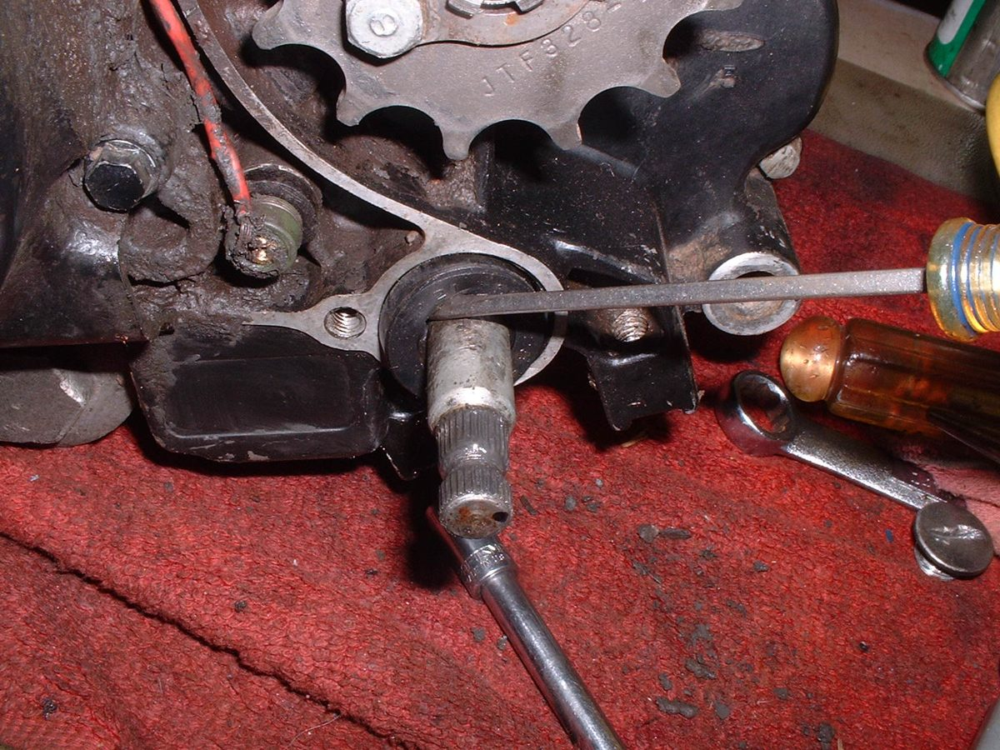

The output shaft (countershaft) is the gearbox shaft that carries the front sprocket. A rubber lip seal stops engine oil escaping round it. A worn seal throws oil onto the chain, the swingarm and sometimes the rear tyre. The seal often fails because of a worn shaft, a loose sprocket or grit packed behind the sprocket cover. This is workshop work on most bikes because the seal sits in the crankcase and a damaged seat means engine work.
Safety
- Oil on the rear tyre or rear brake causes a fall. Clean the tyre, rim and brake with brake cleaner, and replace oil-soaked pads before riding.
- Keep fingers away from the chain and sprocket if the engine is running.
What you can check safely
- Remove the front sprocket cover (a few screws on the left of the engine).
- Scrape out packed mud and chain grease. Look at the seal behind the sprocket with a torch.
- Confirm oil comes from the seal lip and not from a cover gasket above it or the gear lever shaft seal.
- Grip the sprocket and try to move it in and out and up and down. Play here means a worn shaft bearing or a loose sprocket: tell the workshop.
- Check the sprocket bolt or nut and lock plate are tight. K-Light 125: driving (front) sprocket bolt 10 to 16 N·m.
- Check the level of engine oil with Check the engine oil level. Overfilling can push oil past a weak seal.
What the workshop does
- Slackens the chain and removes the front sprocket. See Check and adjust chain slack for setting it afterwards.
- Removes any spacer or collar on the shaft and checks it for grooves. A grooved collar is replaced with the seal.
- Lifts out the old seal without scratching the shaft or the seal seat.
- Cleans the seat, oils the new seal lip and drives it in square with a driver that presses only on the outer edge. The K-Light manual says crankcase seals are never reused.
- Refits spacer and sprocket with a new lock plate, torques the bolt, sets the chain slack and checks oil level.
- If the shaft bearing has play or the seat is damaged, the job becomes a crankcase repair: see Assess bottom end and internal engine damage.
What to ask for
- A new seal and a new collar if grooved.
- A check of chain and sprockets while the sprocket is off: Inspect sprockets.
Check your work
- After a ride the area behind the sprocket stays dry.
- Chain slack is correct and the chain runs straight.
If it did not fix the problem
- Leak comes back fast: shaft bearing play or a breather fault raising crankcase pressure. See Check the crankcase breather.
Reference values (K-Light 125)
| Item | Value | PDF page |
|---|---|---|
| Driving (front) sprocket bolt | 10 to 16 N·m | 194 |